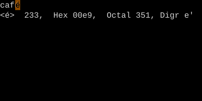

Character Info (ga, g8, g Ctrl-G)
What is this character? Where am I?
ga shows the codepoint of the character under cursor (decimal/hex/octal). g8 shows the UTF-8 byte sequence. g Ctrl-G gives a verbose location report (line/col/word count/byte position).
Character Info
Three diagnostic commands tell you what's actually in the file at the cursor — useful when something looks normal but isn't.
| Key | Shows |
|---|---|
| ga | Codepoint of char under cursor (Dec, Hex, Oct) |
| g8 | UTF-8 byte sequence of char under cursor |
| Ctrl-G | Brief: filename, modified flag, position percentage |
| gCtrl-G | Verbose: word/char/byte counts and cursor position |
Worked example — ga
Inspect the byte under the cursor.

Watch
- 📺 #0491 Terminal Mode (not yet published)
- 📺 #0492 ga / g8 — Character Info (not yet published)
See also: The g Family